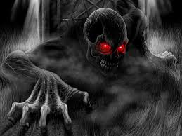

Un día muy caluroso un grupo de bañistas obtan por ir a bañarse en la playa,
de ¨Luna Guana¨.
El día parecía muy tranquilo, cuando de pronto empezarón a oír ruidos entre los árboles.Uno de los chicos era muy miedoso y es entonces cuando, él decidio irse de la playa.
Tiempo más tarde, los q se quedarón volvierón a escuchar los mismos ruidos
y es entonces cuando empezarón a averiguar de donde venía ese ruido.
Hasta que uno de ellos encontró cerca de la playa una cabaña abandonada,dentrarón y se encontrarón con puras telarañas .Empezarón a inspeccionar todos los cuartos que había en la cabaña.
Alli es cuando se encontrarón con un fantasma.Cuando lo vierón empezarón a correr del susto.
Desde aquel día aquellos bañistas que fuerón a la playa, ya no piensan ir a aquella playa, por tan grande el susto.
